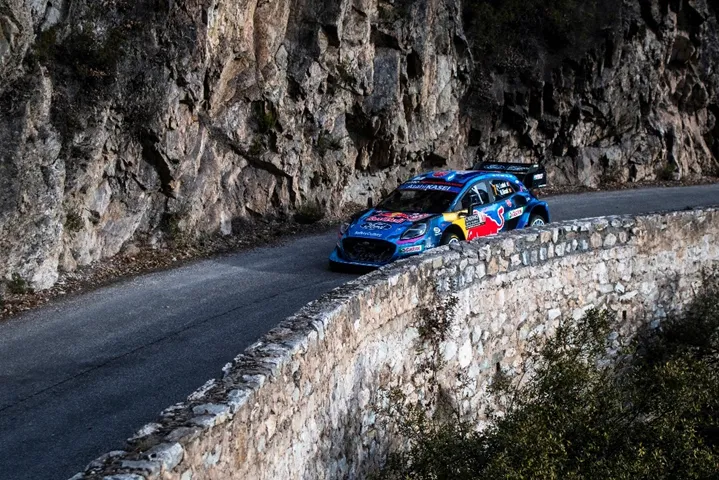
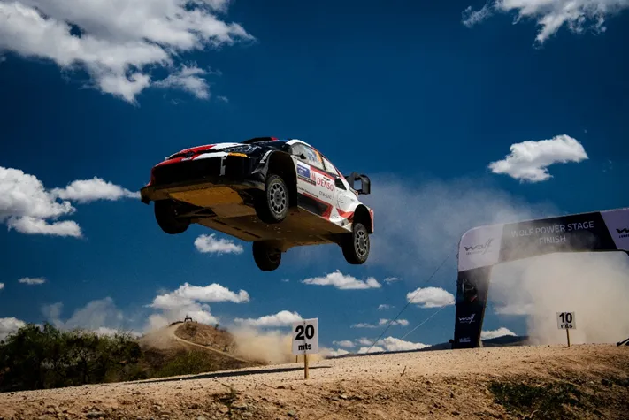
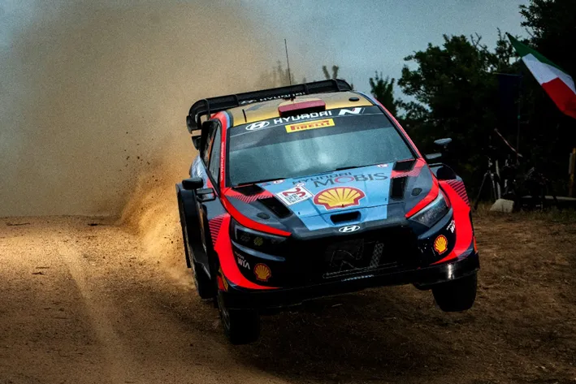
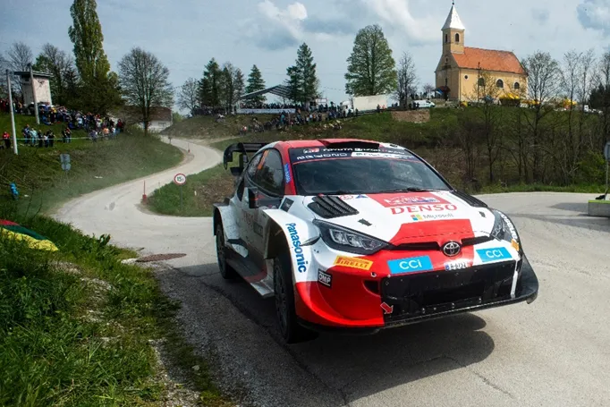
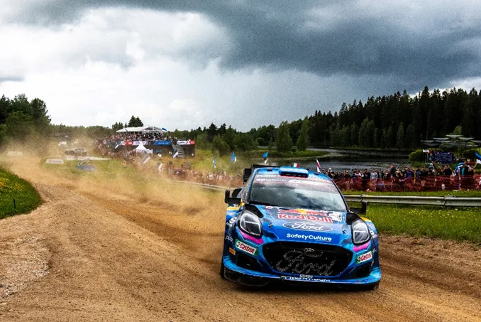
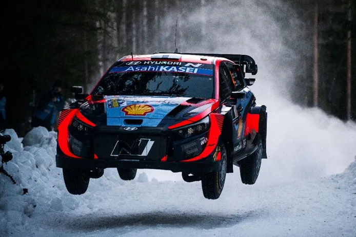
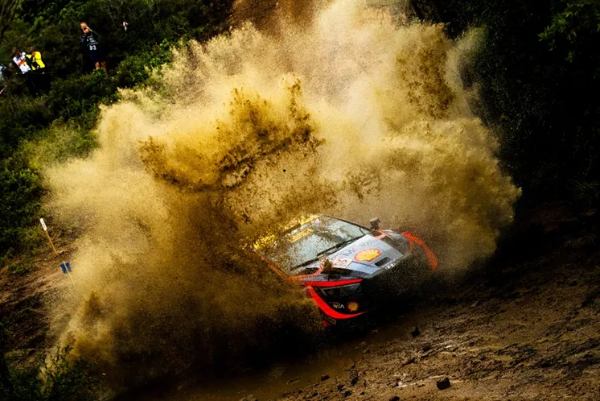
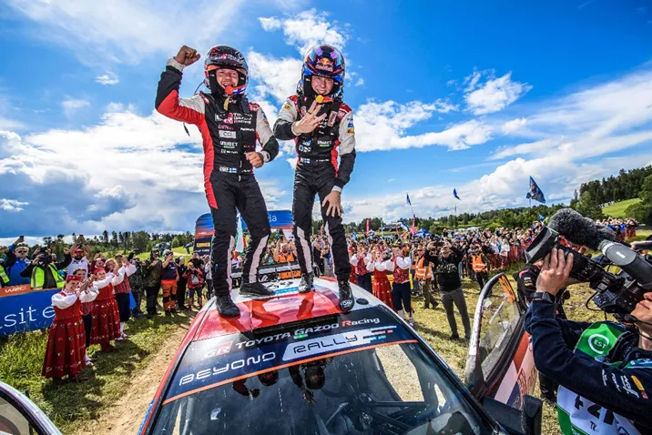
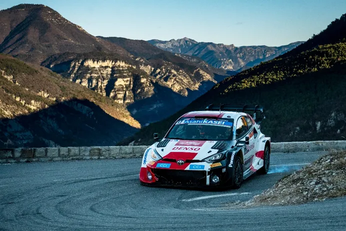
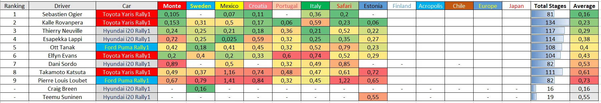

Analyzing the Drivers' Pace in this Season so far
Arguing about how fast a driver has been is a story as old as time. “No, Tanak is faster”, “Hell no, Kalle is way faster” etc etc etc. So I have been doing some numbers, and I am confident that I can tell you how fast all the drivers have been so far this season, 8 rounds in. To calculate this, I used every driver’s second per kilometre deficit in every stage where they set a representative time. SSS, punctures, stages where the driver had mechanical issues etc are obviously excluded. The final second per kilometre deficit is compared to an “ideal pace” let’s say, where a driver has won all of the stages that I’ve accounted for. Before we get into it I would like to mention 2 drivers, Breen and Suninen. Breen’s pace in Sweden was actually the fastest, just 0,163 s/km off the ideal pace, with eventual winner Ott Tanak, just 0,02 s/km off Breen. Teemu Suninen has only competed in one rally so far, so he hasn’t done enough stages to get a proper sample of his speed. He was 0,55 s/km slower than the ideal pace in Estonia, which is a good foundation to build on.
Now, lets get into the proper list.
9. Pierre Louis Loubet – 0,73 s/km – 82 stages
This season so far has definitely not been kind to Pierre Louis Loubet. The Frenchman has completed the fewest amount of representative stages on this list (equal to Dani Sordo who is on a part time season). Loubet has suffered a myriad of mechanical issues this season, including a power steering failure in Monte, engine issues in Croatia and a steering failure in Sardegna, just to name a few. But he has also been prone to crashes, as he retired from a driver error in Mexico (twice) and Portugal, as well as Monte Carlo. Whenever he hasn't had an issue though, he has shown promise. In Estonia he had a trouble free rally, and was able to show decent pace, beating Takamoto Katsuta, who must be considered his closest rival in terms of pace.
Best Performance: Portugal: 0,32 s/km (8 stages)
Worst Performance: Mexico: 1,41 s/km (6 stages)
8. Takamoto Katsuta – 0,61 s/km – 111 stages

I think it’s fairly obvious that Taka has unfortunately taken a step backwards this year. Despite showing progress in 2021, and stability in 2022, this year has been a mixed bag for the Japanese driver. Katsuta was promoted to the 3rd Toyota seat this season for the rallies Ogier isn’t doing, and so far he has only finished one of those in the Top 10, the latest rally, in Estonia (he has also finished Monte, Croatia and Safari inside the points) . Granted, not all of his DNFs were his fault, as he suffered a mechanical problem in Portugal. But he has also rolled in Sweden and Mexico, and on the shakedown in Safari. Taka heads into the 2nd half looking for more consistency and pace. If he fails to get those, then his chances of being the 3rd Toyota driver next year look bleak.
Best Performance: Sweden: 0,37 s/km (12 stages)
Worst Performance: Mexico: 1,16 s/km (9 stages)
7. Dani Sordo – 0,53 s/km – 82 stages

Dani Sordo will have a more expanded programme than he expected this year after what happened to Craig. The Spaniard has competed in 5 rallies so far, with a best finish of 2nd in Portugal. Sordo is at his best in rough gravel rallies, where he takes full advantage of his starting position and ends the rally in the podium positions or atleast near them. The season hasn’t been perfect for him though, in Monte he was by far the slowest of the Rally1 cars, and in Sardegna he rolled and lost 3 minutes. Sordo is “good old reliable” for Hyundai, someone who has a tonne of experience and who’s been in the team for almost a decade, someone who Hyundai can count on to play the role of the 3rd driver perfectly.
Best Performance: Portugal: 0,32 s/km (17 stages)
Worst Performance: Monte Carlo: 0,87 s/km (17 stages)
6. Elfyn Evans – 0,43 s/km – 104 stages

Elfyn Evans’ season has also had it’s ups and downs. In Monte he showed great pace, being the Toyota closest to Ogier on Day 1, but after that, a mediocre Sweden followed, and then he lost 2nd place to Neuville on the last stage in Mexico. He did get an emotional win in Croatia, but lets be honest, his chances at a win were boosted because of Neuville’s crash and Kalle and Ogier getting punctures. He also suffered a massive crash in Portugal that definitely dented his confidence. After that he has finished in the top 4 for the past 3 rallies. Evans’ pace hasn’t spectacular, he is mostly counting on his consistency, and it shows, as he only has 3 stage wins this year ! He is still 2nd in the championship (some 55 points behind teammate Kalle Rovanpera), but I don’t think that even the most hard core of Elfyn Evans fans would argue that he’s been 2nd best this year.
Best Performance: Monte Carlo and Mexico: 0,2 s/km (17 and 14 stages)
Worst Performance: Sardegna: 0,74 s/km (11 stages)
5. Ott Tanak – 0,4 s/km – 108 stages

It’s starting to look like Tanak’s move to M-Sport might go down as a failed move for the Estonian. Tanak has suffered just as much as teammate Pierre Louis Loubet from the Puma’s reliability issues. He's had power steering issues in Monte Carlo, a blown turbo in Mexico, losing the water pump and later the engine in Sardegna, and an engine failure on the shakedown of his home rally in Estonia, which ruled him out any chance he had for a good result. And that’s just the ones we know of! Tanak seems to be looking at the dash or complaining about an issue in every stage end. That being said, the Puma hasn’t been as fast as the Yaris and the i20 either. The only rallies where Tanak could have been on the podium on pace would be Sweden, where he won, and Estonia. Some good news for him would be that the Puma showed to be fast on fast gravel last time out in Estonia, with Finland and Chile coming up. But for sure M Sport should be working overtime to be working on some pace and reliability updates if they want to not get caught up in the situation they were at the end of the 2017 spec WRC era.
Best Performance: Sweden: 0,18 s/km (16 stages)
Worst Performance: Safari: 0,79 s/km (13 stages)
4. Esapekka Lappi – 0,38 s/km – 114 stages

Esapekka Lappi’s move to Hyundai has been a resounding success both for the Finn and the Korean manufacturer. Apart from a slow Monte Carlo where he was getting adjusted to the car (and a rally where none of the Hyundais were particularly pacey) Lappi has been consistently been able to fight for podiums, and even wins ! He actually has the best performance compared to the “ideal pace” in a rally, as he was only 0,025 s/km off in Mexico, but that only lasted 6 stages, as he crashed on day 2. Lappi has 4 podiums this season, and he could have been on the podium in every rally after Monte, such tremendous pace he has shown. Right now he is the best “2nd driver” Hyundai could have asked for, and if he continues this way he could start challenging Neuville in many rallies for that number 1 driver role.
Best Performance: Mexico: 0,025 s/km (6 stages), a more representative one is Sardegna and Sweden where he was 0,25 s/km off
Worst Performance: Monte Carlo: 0,72 s/km (17 stages)
3. Thierry Neuville – 0,29 s/km – 117 stages

If I am honest I didn’t expect Neuville to be this high up on this list, with his pace deficit being close to Kalle. Neuville has also had a mixed season, he crashed out of the lead in Croatia, and suffered mechanical issues on the final day in Portugal, which put him out of the fight for 2nd, and also suffered a suspension failure in Safari (an event where he was disqualified from for illegal recce). Neuville has been very consistent in the stages he finishes without problems though, being very close to first similar to Elfyn Evans. For me his highlight performance apart from his win in Sardegna was his 2nd place finish in Estonia, where he was consistently 2nd best to Kalle throughout the rally, and was faster than his Finnish teammates.
Best Performance: Croatia: 0,18 s/km (13 stages)
Worst Performance: Safari: 0,52 s/km (10 stages)
2. Kalle Rovanpera – 0,23 s/km – 134 stages

It’s quite ironic that the thing that has given Kalle such a big lead in the championship is the thing that hurts him on this list. The Finn has completed more stages out of every other driver, and has also set competitive times in nearly all of them. The Toyota driver has won twice this year, with dominant performances in Portugal and Estonia, and has also featured on the podium a further 3 times, in Monte Carlo, Sardegna and Safari. If he competed in rallies he chose, he wouldn’t be in 2nd but in first, as he wouldn’t be hit that much from road cleaning on rough gravel rallies (stages where he was almost 1s/km were obviously not accounted for here). With such a big lead it’s looking almost certain that Kalle will get his 2nd title in a row in 2023.
Best Performance: Estonia and Portugal: 0,06 s/km (!!)
Worst Performance: Sardegna: 0,59 s/km (14 stages)
1. Sebastien Ogier – 0,16 s/km – 82 stages

Ogier has been quite fast this season, hasn’t he? Granted, he does hand pick the rallies he competes in, and he has also competed in few stages which also helps his position on this list but still, the Frenchman could have won all the rallies he competed in this year and that says a lot. Last year, Ogier wasn’t as fast last year as he is this year, he certainly got more used to the car and is able to show his normal pace, the one that he has shown since his Volkswagen years. His only mishaps have been getting a minute penalty in Croatia and going off the road from the lead in Sardegna. Ogier is still 5th in the championship and could still do 2/3 more rallies so let’s see what the rest of the season has in store for him, and if he is able to carry the pace he has shown in the 5 rallies he has done so far
Best Performance: Mexico: 0,07 s/km (14 stages)
Worst Performance: Sardegna: 0,36 s/km (14 stages)
Everyone's Pace with more detail

All the numbers are second per kilometre deficits to the "ideal pace". The averages are calculated by multiplying the s/km deficit per rally with the stages that the driver completed in the rally, and adding them all together, and then divided by the total amount of stages the driver has competed in so far this season.
By Dimitris Theodorou
All pics are from the Red Bull Content Pool
Massive thanks to eWRC, their s/km stat that's there on each stage saved me a lot of time